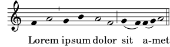

A.5 Ancient notation templates
A.5.1 Transcription of mensural music
When transcribing mensural music, an incipit at the beginning of the
piece is useful to indicate the original key and tempo. While today
musicians are used to bar lines in order to faster recognize rhythmic
patterns, bar lines were not yet invented during the period of mensural
music; in fact, the meter often changed after every few notes. As a
compromise, bar lines are often printed between the staves rather than
on the staves.
global = {
\set Score.skipBars = ##t
% incipit
\once \override Score.SystemStartBracket #'transparent = ##t
\override Score.SpacingSpanner #'spacing-increment = #1.0 % tight spacing
\key f \major
\time 2/2
\once \override Staff.TimeSignature #'style = #'neomensural
\override Voice.NoteHead #'style = #'neomensural
\override Voice.Rest #'style = #'neomensural
\set Staff.printKeyCancellation = ##f
\cadenzaOn % turn off bar lines
\skip 1*10
\once \override Staff.BarLine #'transparent = ##f
\bar "||"
\skip 1*1 % need this extra \skip such that clef change comes
% after bar line
\bar ""
% main
\revert Score.SpacingSpanner #'spacing-increment % CHECK: no effect?
\cadenzaOff % turn bar lines on again
\once \override Staff.Clef #'full-size-change = ##t
\set Staff.forceClef = ##t
\key g \major
\time 4/4
\override Voice.NoteHead #'style = #'default
\override Voice.Rest #'style = #'default
% FIXME: setting printKeyCancellation back to #t must not
% occur in the first bar after the incipit. Dto. for forceClef.
% Therefore, we need an extra \skip.
\skip 1*1
\set Staff.printKeyCancellation = ##t
\set Staff.forceClef = ##f
\skip 1*7 % the actual music
% let finis bar go through all staves
\override Staff.BarLine #'transparent = ##f
% finis bar
\bar "|."
}
discantusNotes = {
\transpose c' c'' {
\set Staff.instrumentName = #"Discantus "
% incipit
\clef "neomensural-c1"
c'1. s2 % two bars
\skip 1*8 % eight bars
\skip 1*1 % one bar
% main
\clef "treble"
d'2. d'4 |
b e' d'2 |
c'4 e'4.( d'8 c' b |
a4) b a2 |
b4.( c'8 d'4) c'4 |
\once \override NoteHead #'transparent = ##t c'1 |
b\breve |
}
}
discantusLyrics = \lyricmode {
% incipit
IV-
% main
Ju -- bi -- |
la -- te De -- |
o, om --
nis ter -- |
ra, __ om- |
"..." |
-us. |
}
altusNotes = {
\transpose c' c'' {
\set Staff.instrumentName = #"Altus "
% incipit
\clef "neomensural-c3"
r1 % one bar
f1. s2 % two bars
\skip 1*7 % seven bars
\skip 1*1 % one bar
% main
\clef "treble"
r2 g2. e4 fis g | % two bars
a2 g4 e |
fis g4.( fis16 e fis4) |
g1 |
\once \override NoteHead #'transparent = ##t g1 |
g\breve |
}
}
altusLyrics = \lyricmode {
% incipit
IV-
% main
Ju -- bi -- la -- te | % two bars
De -- o, om -- |
nis ter -- ra, |
"..." |
-us. |
}
tenorNotes = {
\transpose c' c' {
\set Staff.instrumentName = #"Tenor "
% incipit
\clef "neomensural-c4"
r\longa % four bars
r\breve % two bars
r1 % one bar
c'1. s2 % two bars
\skip 1*1 % one bar
\skip 1*1 % one bar
% main
\clef "treble_8"
R1 |
R1 |
R1 |
r2 d'2. d'4 b e' | % two bars
\once \override NoteHead #'transparent = ##t e'1 |
d'\breve |
}
}
tenorLyrics = \lyricmode {
% incipit
IV-
% main
Ju -- bi -- la -- te | % two bars
"..." |
-us. |
}
bassusNotes = {
\transpose c' c' {
\set Staff.instrumentName = #"Bassus "
% incipit
\clef "bass"
r\maxima % eight bars
f1. s2 % two bars
\skip 1*1 % one bar
% main
\clef "bass"
R1 |
R1 |
R1 |
R1 |
g2. e4 |
\once \override NoteHead #'transparent = ##t e1 |
g\breve |
}
}
bassusLyrics = \lyricmode {
% incipit
IV-
% main
Ju -- bi- |
"..." |
-us. |
}
\score {
\new StaffGroup = choirStaff <<
\new Voice =
"discantusNotes" << \global \discantusNotes >>
\new Lyrics =
"discantusLyrics" \lyricsto discantusNotes { \discantusLyrics }
\new Voice =
"altusNotes" << \global \altusNotes >>
\new Lyrics =
"altusLyrics" \lyricsto altusNotes { \altusLyrics }
\new Voice =
"tenorNotes" << \global \tenorNotes >>
\new Lyrics =
"tenorLyrics" \lyricsto tenorNotes { \tenorLyrics }
\new Voice =
"bassusNotes" << \global \bassusNotes >>
\new Lyrics =
"bassusLyrics" \lyricsto bassusNotes { \bassusLyrics }
>>
\layout {
\context {
\Score
% no bars in staves
\override BarLine #'transparent = ##t
% incipit should not start with a start delimiter
\remove "System_start_delimiter_engraver"
}
\context {
\Voice
% no slurs
\override Slur #'transparent = ##t
% Comment in the below "\remove" command to allow line
% breaking also at those barlines where a note overlaps
% into the next bar. The command is commented out in this
% short example score, but especially for large scores, you
% will typically yield better line breaking and thus improve
% overall spacing if you comment in the following command.
%\remove "Forbid_line_break_engraver"
}
}
}
![[image of music]](../59/lily-cd719e46.png)
A.5.2 Gregorian transcription template
This example demonstrates how to do modern transcription of Gregorian
music. Gregorian music has no measure, no stems; it uses only half and
quarter note heads, and special marks, indicating rests of different
length.
\include "gregorian.ly"
chant = \relative c' {
\set Score.timing = ##f
f4 a2 \divisioMinima
g4 b a2 f2 \divisioMaior
g4( f) f( g) a2 \finalis
}
verba = \lyricmode {
Lo -- rem ip -- sum do -- lor sit a -- met
}
\score {
\new Staff <<
\new Voice = "melody" \chant
\new Lyrics = "one" \lyricsto melody \verba
>>
\layout {
\context {
\Staff
\remove "Time_signature_engraver"
\remove "Bar_engraver"
\override Stem #'transparent = ##t
}
\context {
\Voice
\override Stem #'length = #0
}
\context {
\Score
barAlways = ##t
}
}
}

Autres langues : español, deutsch.